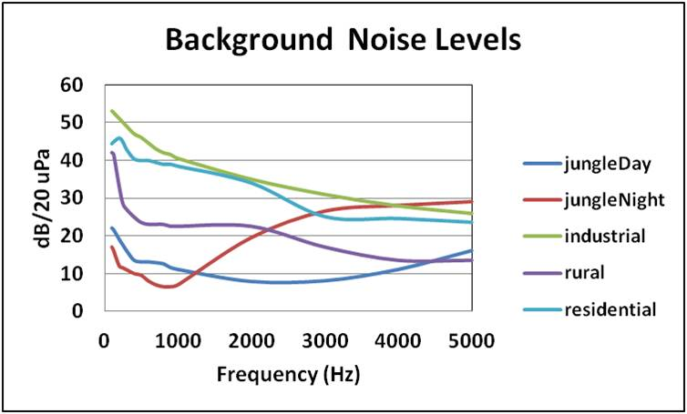

WSF_ACOUSTIC_SENSOR¶
- sensor WSF_ACOUSTIC_SENSOR¶
sensor <name> WSF_ACOUSTIC_SENSOR ... Platform Part Commands ... ... sensor Commands ... mode <name> ... Antenna Commands ... ... receiver ... end_receiver ... WSF_ACOUSTIC_SENSOR Mode Commands ... end_mode end_sensor
Overview¶
WSF_ACOUSTIC_SENSOR implements a simple acoustic sensor.
This model is a simple representation of human hearing. The model uses 1/3 octave spectral acoustic source data. Several sources have been used to create this model.
The sound propagation, atmospheric attenuation and ground reflection have been modeled as defined in Engineering Sciences Data Unit #78002, “Evaluation of the Attenuation of Sound by a Uniform Atmosphere” and #94035, “The Correction of Measured Noise Spectra for the Effects of Ground Reflection.”
This model has several background noise levels defined, as extracted from “A Review of Outdoor Environmental Acoustic Background Noise,” Charles P. Wright, Boeing document #D6-38671, 18 May 1991. Click on the chart for a higher resolution image (Frequency is 1/3 Octave) for background noise levels.
The human hearing threshold and 1/3 octave filtering data are defined in “Acoustics - Reference zero for the calibration of audiometric equipment - Part 7: Reference threshold of hearing under free-flight and diffuse-field listening conditions,” ISO 389-7:2005 and “Technical Memorandum 3-85: Proposed Aural Nondetectability Limits for Army Materiel,” Georges R. Garinther, Joel T. Kalb and David C. Hodge, Mar 1995, respectively.
Note: The Air Force publishes noise data with their accepted noise models. This data can be obtained from: http://www.afcee.brooks.af.mil/ec/noise/noisemodels/noisemodels.asp
Mode Commands¶
- detection_threshold <value>¶
Defines the acoustic detection threshold relative to human hearing threshold.
Default: 0.0
- acoustic_type [ human ]¶
Defines the type of acoustic sensor.
Default: human
- background_noise [ jungle_day | jungle_night | industrial | rural | residential ]¶
Defines the type of acoustic background.
Default: residential